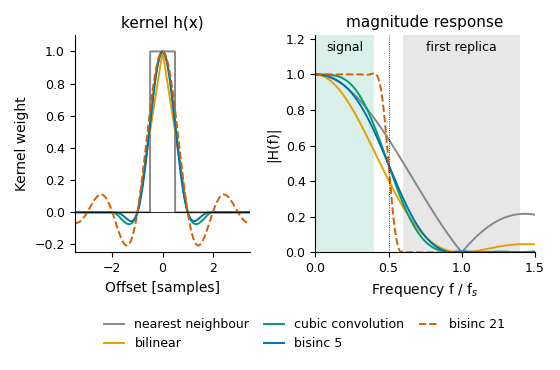
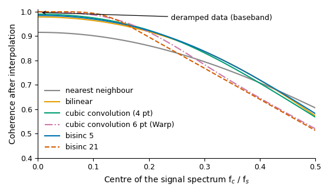

| SAR Concepts: Resampling and Interpolation | |
Whenever an image is moved onto a new grid (geocoding, coregistration of a Secondary, mosaicking, a change of pixel size) each output value is interpolated from neighbouring input samples. The kernel decides how much the result is smoothed or rings and, for complex data, how much coherence survives. The right choice depends on whether the band holds intensity, complex samples or class labels.
An interpolated value at a non-integer position x (in samples) is a weighted sum of the input samples sk:
s(x) = Σk h(x − k) · sk
This is a convolution, so the kernel h acts as a filter with frequency response H(f). The ideal kernel for band-limited data, sinc(x) = sin(πx)/(πx), passes everything below half the sampling rate fs and removes the spectral replicas around multiples of fs. Practical kernels approximate this infinite kernel (Figure 1). Nearest neighbour copies the closest sample: it never invents values, but shifts positions by up to half a pixel and passes much replica energy. Bilinear never overshoots but damps the upper part of the band: it smooths. Cubic convolution (Keys, 1981) uses 4 samples per axis:
h(x) = (a + 2)|x|3 − (a + 3)|x|2 + 1 for |x| < 1
h(x) = a|x|3 − 5a|x|2 + 8a|x| − 4a for 1 ≤ |x| < 2
and zero beyond. SNAP uses a = −0.5, for which the kernel reproduces quadratic signals exactly; its small negative lobes sharpen the passband at the cost of up to about 7% overshoot at a step. The windowed sinc (SNAP's BISINC, N = 5, 11 or 21 points) tapers the sinc with a Hann window, which is zero at the ends, so BISINC_5 has only 4 non-zero taps:
h(x) = sinc(x) · 0.5 [1 + cos(2πx / (N − 1))] for |x| ≤ (N − 1)/2
The trade-off: short smooth kernels blur; long sinc-like kernels keep the spectrum but ring further from bright targets and cost more.

Figure 1. SNAP's kernels (left) and their magnitude responses (right). Green shading: the band of a signal oversampled by 1.25 (B/fs = 0.8); grey shading: its first replica.
Interpolate backscatter (β0, σ0, γ0, intensity) in linear power. Interpolating dB values takes a weighted geometric mean, which is biased low on speckle (by up to 2.5 dB for single-look data, see Speckle). Interpolating amplitude and squaring is biased too: halfway between two independent single-look pixels the expected power is (1 + π/4)/2 ≈ 0.89 of the mean (−0.5 dB). Bilinear and cubic kernels average neighbouring speckle (variance drops, mean kept); cubic and sinc kernels can give small negative intensities next to strong targets. For class maps, masks, flags and no-data values only nearest neighbour is valid: other kernels blend codes into meaningless values (classes 1 and 3 become 2).
When the Secondary SLC is resampled onto the Reference grid, interpolation errors become interferometric decorrelation and phase noise (Hanssen and Bamler, 1999). Figure 2 computes, for SNAP's kernels, the coherence between the interpolated and the true signal. At baseband with B/fs = 0.8, nearest neighbour keeps 0.92, bilinear 0.98, cubic convolution 0.99 and BISINC_5 0.985; Warp's 6-point cubic convolution and BISINC_11/21 keep 0.999 or more. For the narrower Sentinel-1 IW azimuth band (327 Hz in 486 Hz, B/fs ≈ 0.67) BISINC_5 keeps 0.994. Longer kernels matter most where coherence is high.

Figure 2. Coherence between the interpolated and the true complex signal (flat spectrum, B/fs = 0.8, random sub-pixel positions) versus the centre fc of its spectrum.
All kernels are low-pass filters centred on zero frequency, so they fail when the spectrum is not at baseband: at fc = fs/4 every kernel drops to 0.83 to 0.89, at fs/2 to 0.5 to 0.6 (averaged over random sub-pixel positions; part of the loss is a phase error that depends on the position). That happens whenever the Doppler centroid is not zero (squinted stripmap, spotlight) and above all in TOPS bursts, whose centroid sweeps several kHz (see TOPS). The data are therefore deramped and demodulated to baseband, interpolated, and reramped at the new positions. Never interpolate a wrapped phase band (values either side of a ±π jump average to nonsense); interpolate i/q.
A signal of bandwidth B is sampled without aliasing if the spacing is at most 1/B; SAR products are typically sampled 1.1 to 1.5 times faster. Detection doubles the bandwidth (|s|2 has twice the spectral width of s), so intensity formed on the SLC grid is aliased (its spectrum is 2B wide but sampled at about 1.25B); oversampling the SLC by 2 first avoids this. Oversampling adds pixels, never resolution. Conversely, picking every n-th pixel folds the discarded part of the spectrum back into the image: low-pass (multilook) first.
For geocoding, choose the pixel spacing from the resolution. About half the resolution keeps all detail (Sentinel-1 IW GRDH: 20 m × 22 m resolution at 10 m pixels); much finer spacing only makes bigger files. Where range and azimuth sampling differ (S-1 IW SLC: about 3 to 4.5 m ground range by 14 m azimuth), square pixels either discard range detail or oversample azimuth.
Geocoding, terrain flattening and DEM-assisted coregistration interpolate the DEM at every output pixel, which adds no detail: a 30 m DEM resampled to 10 m stays a 30 m DEM (see Height references). Nearest neighbour gives height steps. Bilinear gives continuous heights but slopes that jump at DEM cell edges, which can show in local-incidence-angle and terrain-flattened bands when the output pixel is much finer than the DEM. Bicubic gives continuous slopes.
The snap-core kernel names are NEAREST_NEIGHBOUR, BILINEAR_INTERPOLATION,
CUBIC_CONVOLUTION (Keys, a = −0.5), BISINC_5_POINT_INTERPOLATION,
BISINC_11_POINT_INTERPOLATION, BISINC_21_POINT_INTERPOLATION (Hann-windowed sinc) and
BICUBIC_INTERPOLATION (a bicubic patch fitted to the 2 × 2 neighbours and their derivatives).
| Operator (GPT alias) | Parameter | Choices | Default |
|---|---|---|---|
Terrain-Correction, Ellipsoid-Correction-RD | Image Resampling Method | all seven above | BILINEAR_INTERPOLATION |
| DEM Resampling Method | all seven + DELAUNAY_INTERPOLATION | BILINEAR_INTERPOLATION | |
GSLC-Terrain-Correction | Image / DEM Resampling Method | as Terrain-Correction | BISINC_5_POINT_INTERPOLATION / BILINEAR_INTERPOLATION |
Back-Geocoding, DEM-Assisted-Coregistration | Resampling Type / DEM Resampling Method | all seven | BISINC_5_POINT_INTERPOLATION / BICUBIC_INTERPOLATION |
Terrain-Flattening | DEM Resampling Method | all seven | BILINEAR_INTERPOLATION |
Warp | Interpolation Method | nearest, bilinear, bicubic, bicubic2, linear (falls back to bilinear), cubic convolution (4 or 6 points), truncated sinc (6, 8 or 16 points) | Cubic convolution (6 points) |
CreateStack | Resampling Type | NONE + all seven | NONE (whole-pixel shifts only) |
SAR-Mosaic, SARSim-Terrain-Correction, Ellipsoid-Correction-GG | Resampling Type / Image Resampling Method | nearest, bilinear, cubic convolution | nearest (Mosaic), bilinear (others) |
SRGR | Interpolation Method | nearest, linear, cubic, cubic2, sinc | Linear interpolation |
NATIVE_ANISOTROPIC: slant-range step
east, azimuth step north) the same for every product of a stack.LowPass Filtering (default; a 3 × 3, 5 × 5 or 7 × 7
boxcar; complex input is converted to intensity first and dB is averaged in linear) or Sub-Sampling (plain decimation; complex stays complex), default ratio 0.5.
Multilook is usually the better way to coarsen detected data.See also TOPS, Coregistration, Geometry and terrain correction, Speckle and multilooking and Coherence.